NCERT इतिहास (कक्षा 10) - अध्याय 2
भारत में राष्ट्रवाद (Nationalism in India)
भाग 1: प्रथम विश्व युद्ध, खिलाफत और असहयोग
चित्र 2.1 (इन्फोग्राफिक): प्रथम विश्व युद्ध (1914-1918) के भारत पर आर्थिक, राजनीतिक और सामाजिक प्रभाव।
प्रथम विश्व युद्ध (1914-1918) ने भारत में एक नई आर्थिक और राजनीतिक स्थिति पैदा कर दी थी। अंग्रेजों ने युद्ध के खर्चों को पूरा करने के लिए कर्जे लिए और करों में भारी वृद्धि की। 1913 से 1918 के बीच कीमतें दोगुनी हो चुकी थीं, जिससे आम जनता की सीमाहीन कठिनाइयां बढ़ गईं।
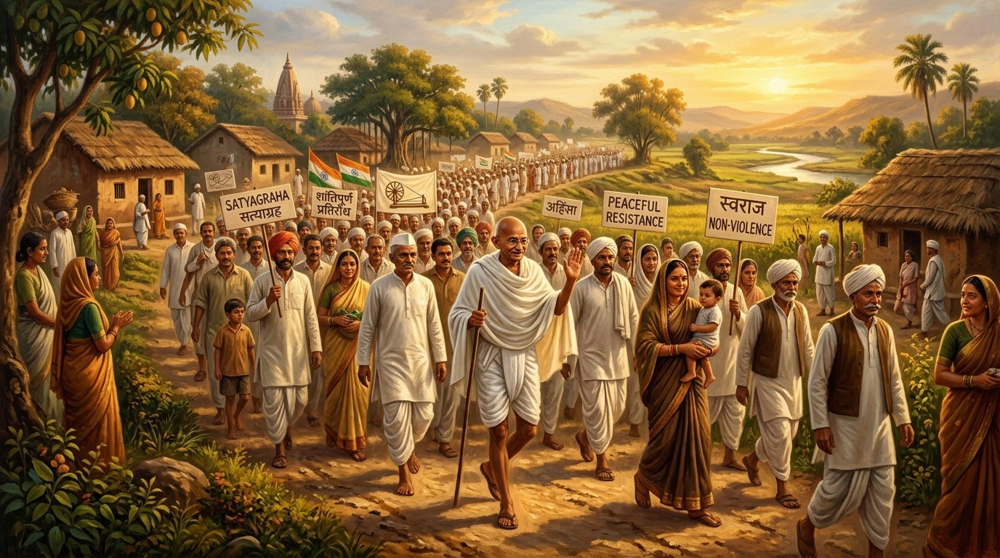
चित्र 1 (AI HD Artwork): 1915 में दक्षिण अफ्रीका से लौटने के बाद महात्मा गांधी द्वारा भारत में सत्याग्रह आंदोलन का बीजारोपण एवं अहिंसक प्रतिरोध।
🔍 चित्र का विस्तृत विवरण & ऐतिहासिक संदर्भ:
• क्या दर्शाता है: ai satyagraha concept का ऐतिहासिक दृश्य और कलात्मक निरूपण।
• ऐतिहासिक महत्व: पाठ्यपुस्तक के इस अध्याय में विषय की गहराई और विजुअल समझ को बढ़ाने वाला महत्वपूर्ण प्रतीक।
🔍 चित्र का विस्तृत विवरण & ऐतिहासिक संदर्भ:
• क्या दर्शाता है: महात्मा गांधी और सत्याग्रह का अमूर्त विचार - सत्य की शक्ति और अहिंसात्मक प्रतिरोध का आध्यात्मिक व राजनीतिक सिद्धांत।
• ऐतिहासिक महत्व: 1915 में दक्षिण अफ्रीका से लौटने के बाद गांधीजी ने चंपारण (1917), खेड़ा (1917) और अहमदाबाद (1918) में सत्याग्रह के सफल प्रयोग किए।
🔑 सत्याग्रह का विचार (The Idea of Satyagraha):
महात्मा गांधी जनवरी 1915 में दक्षिण अफ्रीका से भारत लौटे थे। दक्षिण अफ्रीका में उन्होंने एक नए तरह के जन-आंदोलन के रास्ते पर चलते हुए नस्लभेदी सरकार से सफलतापूर्वक लोहा लिया था। इस पद्धति को वे 'सत्याग्रह' कहते थे।
• सत्याग्रह का मूल सिद्धांत: सत्याग्रह के विचार में सत्य की शक्ति पर आग्रह और सत्य की खोज पर जोर दिया जाता था। इसका अर्थ यह था कि यदि आपका कारण सच्चा है, आपका संघर्ष अन्याय के खिलाफ है तो उत्पीड़क से मुकाबला करने के लिए आपको शारीरिक बल की आवश्यकता नहीं है।
• अहिंसा का धर्म: अहिंसा की चेतना से सत्याग्रही बिना प्रतिशोध की भावना या आक्रामकता अपनाए केवल सत्य के आग्रह द्वारा उत्पीड़क की चेतना को झकझोर कर जीत हासिल कर सकता है। गांधीजी का मानना था कि अहिंसा का यह धर्म सभी भारतीयों को एकता के सूत्र में बांध सकता है।
गांधीजी के शुरुआती 3 स्थानीय सत्याग्रह आंदोलन:
वर्ष
स्थान / क्षेत्र
कारण / मुद्दा
परिणाम / सफलता
1917
चंपारण (बिहार)
नील की खेती (Indigo plantation) करने वाले किसानों को दमनकारी तिनकठिया प्रणाली से मुक्ति दिलाना।
गांधीजी का भारत में पहला सफल सत्याग्रह; किसानों को राहत मिली।
1917
खेड़ा (गुजरात)
फसल खराब होने और प्लेग महामारी के कारण किसान लगान चुकाने में असमर्थ थे; लगान माफी की मांग।
राजस्व वसूली स्थगित की गई और केवल सक्षम किसानों से कर लिया गया।
1918
अहमदाबाद (गुजरात)
सूती कपड़ा मिल मजदूरों (Cotton Mill Workers) का प्लेग बोनस व 35% मजदूरी वृद्धि का आंदोलन।
गांधीजी की पहली भूख हड़ताल; मिल मालिकों ने 35% मजदूरी बढ़ाना स्वीकार किया।
रोलेट एक्ट 1919 (Rowlatt Act) एवं रोलेट सत्याग्रह:
1919 में इम्पीरियल लेजिस्लेटिव काउंसिल ने भारतीय सदस्यों के भारी विरोध के बावजूद रोलेट एक्ट (Rowlatt Act) को जल्दबाजी में पारित कर दिया। इस कानून ने सरकार को राजनीतिक गतिविधियों को कुचलने और राजनीतिक कैदियों को बिना मुकदमा चलाए 2 साल तक जेल में बंद रखने का अधिकार दे दिया।
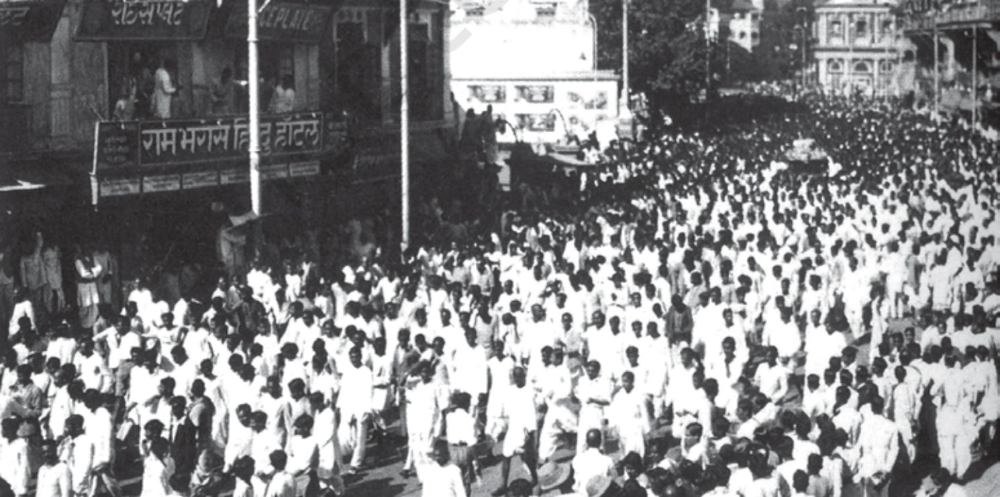
चित्र 2.1 (आधिकारिक NCERT इतिहास पाठ्यपुस्तक अध्याय 2): 6 अप्रैल 1919 - रोलेट एक्ट के विरोध में सड़कों पर उतरी सत्याग्रहियों की ऐतिहासिक हड़ताल व जुलूस।
🔍 चित्र का विस्तृत विवरण & ऐतिहासिक संदर्भ:
• क्या दर्शाता है: ncert ch2 fig1 procession का ऐतिहासिक दृश्य और कलात्मक निरूपण।
• ऐतिहासिक महत्व: पाठ्यपुस्तक के इस अध्याय में विषय की गहराई और विजुअल समझ को बढ़ाने वाला महत्वपूर्ण प्रतीक।
🔍 चित्र का विस्तृत विवरण & ऐतिहासिक संदर्भ:
• क्या दर्शाता है: अप्रैल 1919 में रौलट एक्ट (Rowlatt Act) के विरोध में सड़कों पर निकला विशाल जनसैलाब और पुलिस द्वारा प्रदर्शनकारियों पर किया गया लाठीचार्ज।
• ऐतिहासिक महत्व: रौलट एक्ट के तहत बिना मुकदमे 2 साल तक जेल में रखने के काले कानून के खिलाफ पूरे देश में पहली बार राष्ट्रव्यापी हड़ताल हुई।
⚠️ रोलेट सत्याग्रह (6 अप्रैल 1919):
गांधीजी इस अन्यायपूर्ण कानून के खिलाफ अहिंसक नागरिक अवज्ञा चाहते थे। इसे 6 अप्रैल 1919 को एक राष्ट्रव्यापी हड़ताल (Strike) के साथ शुरू किया गया। विभिन्न शहरों में रैलियाँ आयोजित की गईं, दुकानें बंद हो गईं और रेलवे वर्कशॉप्स में मजदूर हड़ताल पर चले गए। संचार सुविधाएं (टेलीग्राफ और रेलवे) बाधित होने के डर से अंग्रेजों ने राष्ट्रवादियों पर दमन शुरू कर दिया।
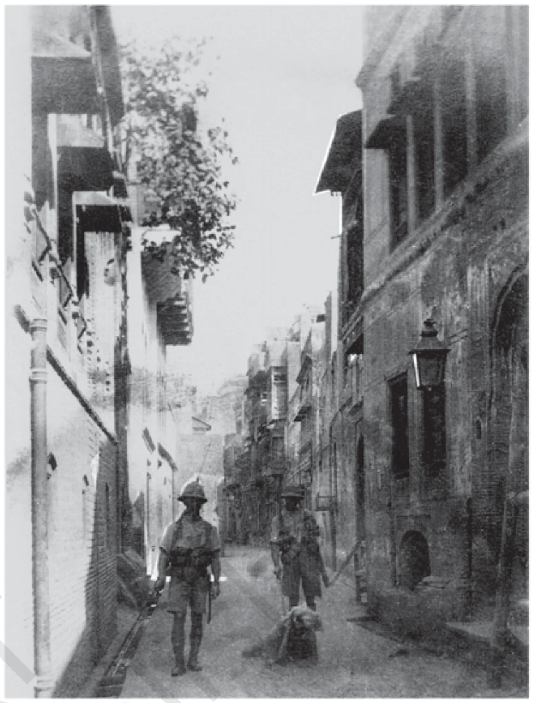
चित्र 2.2 (आधिकारिक NCERT इतिहास पाठ्यपुस्तक अध्याय 2): 1919 जलियांवाला बाग हत्याकांड के बाद अमृतसर की गलियों में जनरल डायर का दमनकारी 'रेंगने का आदेश' (Crawling Orders)।
🔍 चित्र का विस्तृत विवरण & ऐतिहासिक संदर्भ:
• क्या दर्शाता है: ncert ch2 fig2 jallianwala का ऐतिहासिक दृश्य और कलात्मक निरूपण।
• ऐतिहासिक महत्व: पाठ्यपुस्तक के इस अध्याय में विषय की गहराई और विजुअल समझ को बढ़ाने वाला महत्वपूर्ण प्रतीक।
🔍 चित्र का विस्तृत विवरण & ऐतिहासिक संदर्भ:
• क्या दर्शाता है: 13 अप्रैल 1919 को अमृतसर के जलियांवाला बाग का ऐतिहासिक मैदान और शहीदी कुआं/दीवारें जिन पर गोलियों के निशान आज भी मौजूद हैं।
• ऐतिहासिक महत्व: बैसाखी के दिन जनरल डायर ने बाहर निकलने के एकमात्र रास्ते को बंद करके निहत्थे मासूमों पर गोलियां चलवाईं, जिसमें सैकड़ों लोग मारे गए।
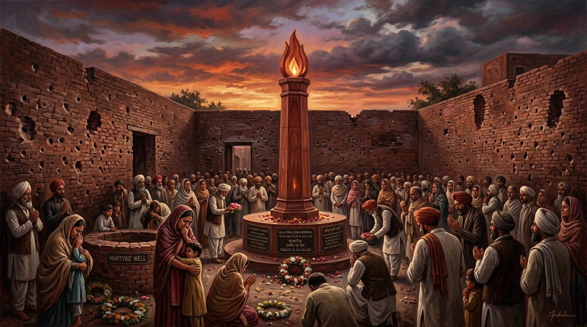
चित्र 2 (AI HD Artwork): 13 अप्रैल 1919 के जलियांवाला बाग हत्याकांड में शहीद हुए निर्दोष देशवासियों की पावन स्मृति एवं अमर ज्योति स्मारक।
🔍 चित्र का विस्तृत विवरण & ऐतिहासिक संदर्भ:
• क्या दर्शाता है: ai jallianwala memorial का ऐतिहासिक दृश्य और कलात्मक निरूपण।
• ऐतिहासिक महत्व: पाठ्यपुस्तक के इस अध्याय में विषय की गहराई और विजुअल समझ को बढ़ाने वाला महत्वपूर्ण प्रतीक।
🔍 चित्र का विस्तृत विवरण & ऐतिहासिक संदर्भ:
• क्या दर्शाता है: जलियांवाला बाग स्मारक की अमर ज्योति और 1919 के हत्याकांड की राष्ट्रीय स्मृति का कलात्मक निरूपण।
• ऐतिहासिक महत्व: इस घटना के विरोध में रवींद्रनाथ टैगोर ने अपनी 'नाइटहुड' (Knighthood) की उपाधि लौटा दी थी और गांधीजी ने असहयोग आंदोलन की नींव रखी।
जलियांवाला बाग हत्याकांड (13 अप्रैल 1919):
13 अप्रैल 1919 को बैसाखी वाले दिन अमृतसर के जलियांवाला बाग में एक गाँव वाले सालाना बैसाखी मेले में शिरकत करने के लिए इकट्ठे हुए थे। काफी लोग सरकार द्वारा लागू किए गए दमनकारी कानूनों का विरोध करने के लिए भी एकत्र हुए थे।
यह मैदान चारों तरफ से बंद था और बाहर निकलने का केवल एक संकरा रास्ता था। शहर में मार्शल लॉ लागू हो चुका था और कमान जनरल डायर (General Dyer) के हाथों में थी।
डायर हथियाबंद सैनिकों के साथ वहाँ पहुँचा और बाहर निकलने के रास्ते को बंद करा दिया। इसके बाद उसने सिपाहियों को निहत्थी भीड़ पर अंधाधुंध गोलियां चलाने का हुक्म दे दिया। सैकड़ों लोग मारे गए।
बाद में उसने बताया कि वह सत्याग्रहियों के ज़हन में एक 'नैतिक प्रभाव' - दहशत और विस्मय का भाव - उत्पन्न करना चाहता था।
इस घटना की खबर फैलते ही उत्तर भारत के कई शहरों में लोग सड़कों पर उतर आए। हड़तालें होने लगीं, लोग पुलिस से मोर्चा लेने लगे और सरकारी इमारतों पर हमले करने लगे। सरकार ने बर्बर दमन का रास्ता अपनाया; सत्याग्रहियों को जमीन पर नाक रगड़ने, सड़क पर घिसट कर चलने और सब साहबों को सलाम करने के लिए मजबूर किया गया। हिंसा फैलते देख गांधीजी ने रोलेट सत्याग्रह वापस ले लिया।
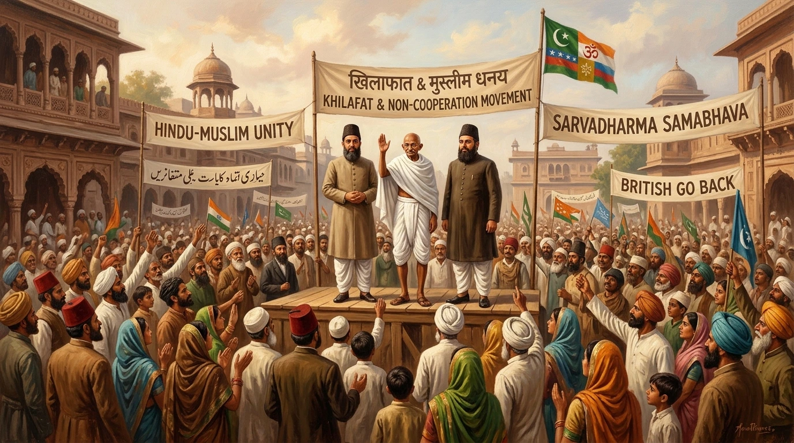
चित्र 3 (AI HD Artwork): 1920 का खिलाफत एवं असहयोग आंदोलन - महात्मा गांधी तथा अली बंधुओं (मोहम्मद अली व शौकत अली) के नेतृत्व में ऐतिहासिक हिंदू-मुस्लिम एकता।
🔍 चित्र का विस्तृत विवरण & ऐतिहासिक संदर्भ:
• क्या दर्शाता है: ai khilafat unity का ऐतिहासिक दृश्य और कलात्मक निरूपण।
• ऐतिहासिक महत्व: पाठ्यपुस्तक के इस अध्याय में विषय की गहराई और विजुअल समझ को बढ़ाने वाला महत्वपूर्ण प्रतीक।
🔍 चित्र का विस्तृत विवरण & ऐतिहासिक संदर्भ:
• क्या दर्शाता है: हिंदू-मुस्लिम एकता और खिलाफत आंदोलन (1919) - मोहम्मद अली और शौकत अली (अली बंधु) के साथ महात्मा गांधी की ऐतिहासिक एकजुटता।
• ऐतिहासिक महत्व: ऑटोमन तुर्की के खलीफा के समर्थन में शुरू हुए खिलाफत आंदोलन को असहयोग आंदोलन से जोड़कर राष्ट्रीय आंदोलन को व्यापक जनाधार दिया गया।
📚 खिलाफत आंदोलन (Khilafat Movement) और हिंदू-मुस्लिम एकता:
रोलेट सत्याग्रह यद्यपि एक बहुत बड़ा आंदोलन था लेकिन फिर भी यह मुख्य रूप से शहरों और कस्बों तक ही सीमित था। महात्मा गांधी पूरे भारत में और भी बड़ा जनांदोलन खड़ा करना चाहते थे। उनका मानना था कि हिंदू और मुसलमानों को एक-दूसरे के करीब लाए बिना ऐसा कोई आंदोलन नहीं चलाया जा सकता।
• कारण: प्रथम विश्व युद्ध में ऑटोमन तुर्की की हार हो चुकी थी। यह अफवाह फैली थी कि इस्लामी दुनिया के आध्यात्मिक नेता (खलीफा - Khalifa) पर एक बहुत सख्त शांति संधि थोपी जाएगी।
• खिलाफत समिति: खलीफा की तात्कालिक शक्तियों की रक्षा के लिए मार्च 1919 में बंबई में एक 'खिलाफत समिति' का गठन किया गया था। मोहम्मद अली और शौकत अली (अली बंधुओं) ने गांधीजी के साथ चर्चा शुरू की।
• सितंबर 1920 (कलकत्ता अधिवेशन): कांग्रेस के कलकत्ता अधिवेशन में गांधीजी ने अन्य नेताओं को राजी कर लिया कि खिलाफत आंदोलन के समर्थन और 'स्वराज' के लिए एक असहयोग आंदोलन शुरू किया जाना चाहिए।
असहयोग ही क्यों? (Why Non-Cooperation?):
अपनी प्रसिद्ध पुस्तक 'हिंद स्वराज' (Hind Swaraj - 1909) में महात्मा गांधी ने लिखा था कि भारत में ब्रिटिश शासन भारतीयों के सहयोग से ही स्थापित हुआ था और यह शासन इसी सहयोग के कारण चल पा रहा है। यदि भारत के लोग अपना सहयोग वापस ले लें तो साल भर के भीतर ब्रिटिश शासन ढह जाएगा और 'स्वराज' की स्थापना हो जाएगी।
📜 असहयोग आंदोलन के 3 चरण (Stages of Non-Cooperation Movement):
1. पदवियों व उपाधियों का समर्पण: सरकार द्वारा दी गई पदवियों (Titles & Honours) को वापस लौटाना (उदा: गांधीजी द्वारा कैसर-ए-हिंद लौटाना)।
2. बहिष्कार (Boycott): सरकारी नौकरियों, सेना, पुलिस, अदालतों, विधायी परिषदों (Legislative Councils), स्कूलों और विदेशी वस्तुओं का पूर्ण बहिष्कार।
3. पूर्ण सविनय अवज्ञा: यदि सरकार दमन का रास्ता अपनाती है तो व्यापक सविनय अवज्ञा अभियान शुरू करना।
कांग्रेस का नागपुर अधिवेशन (दिसंबर 1920): कौंसिल चुनावों के बहिष्कार को लेकर कांग्रेस के भीतर हिचकिचाहट थी। अंततः दिसंबर 1920 में नागपुर अधिवेशन में एक समझौता हुआ और असहयोग कार्यक्रम पर स्वीकृति की मुहर लगा दी गई।
भाग 2: आंदोलन के भीतर अलग-अलग धाराएं
जनवरी 1921 में असहयोग-खिलाफत आंदोलन शुरू हुआ। इस आंदोलन में विभिन्न सामाजिक समूहों ने हिस्सा लिया, लेकिन हर एक की अपनी-अपनी आकांक्षाएं थीं। सभी के लिए 'स्वराज' का अर्थ अलग-अलग था।
1. शहरों में आंदोलन (Movement in the Towns):
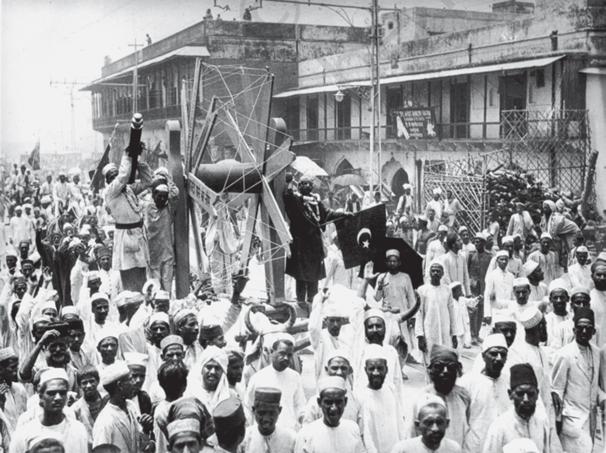
चित्र 2.3 (आधिकारिक NCERT इतिहास पाठ्यपुस्तक अध्याय 2): असहयोग आंदोलन (1921-22) के दौरान विदेशी कपड़ों का बहिष्कार और उनकी होली जलाना।
🔍 चित्र का विस्तृत विवरण & ऐतिहासिक संदर्भ:
• क्या दर्शाता है: ncert ch2 fig3 foreigncloth का ऐतिहासिक दृश्य और कलात्मक निरूपण।
• ऐतिहासिक महत्व: पाठ्यपुस्तक के इस अध्याय में विषय की गहराई और विजुअल समझ को बढ़ाने वाला महत्वपूर्ण प्रतीक।
🔍 चित्र का विस्तृत विवरण & ऐतिहासिक संदर्भ:
• क्या दर्शाता है: असहयोग आंदोलन (1921-1922) के दौरान विदेशी कपड़ों की सरेआम होली जलाते भारतीय नागरिक और खादी के वस्त्र अपनाते लोग।
• ऐतिहासिक महत्व: 1921 से 1922 के बीच विदेशी कपड़ों का आयात 102 करोड़ रुपये से घटकर 57 करोड़ रुपये रह गया और स्वदेशी उद्योगों को भारी बढ़ावा मिला।
विद्यार्थी एवं शिक्षक: हजारों छात्रों ने स्कूल-कॉलेज छोड़ दिए। हेडमास्टरों और शिक्षकों ने इस्तीफे दे दिए।
वकील: मोतीलाल नेहरू, सी.आर. दास, असफ अली और जवाहरलाल नेहरू जैसे प्रसिद्ध वकीलों ने मुकदमे लड़ना छोड़ दिया।
कौंसिल चुनाव: मद्रास को छोड़कर अधिकांश प्रांतों में परिषदों के चुनावों का बहिष्कार किया गया। मद्रास में जस्टिस पार्टी (Justice Party) जो गैर-ब्राह्मणों की पार्टी थी, ने चुनाव लड़ा क्योंकि उनका मानना था कि कौंसिल में प्रवेश करके वे अधिकार पा सकते हैं।
आर्थिक प्रभाव: विदेशी कपड़ों का बहिष्कार किया गया, शराब की दुकानों की पिकेटिंग (Picketing) की गई और विदेशी कपड़ों की होली जलाई गई। 1921 से 1922 के बीच विदेशी कपड़ों का आयात 102 करोड़ रुपये से घटकर 57 करोड़ रुपये रह गया। भारतीय कपड़ा मिलों और हथकरघों का उत्पादन बढ़ने लगा।
⚠️ शहरों में आंदोलन के धीमा पड़ने के 2 मुख्य कारण:
1. खादी का महंगा होना: खादी का कपड़ा मिलों में बनने वाले बड़े पैमाने के सस्ते विदेशी कपड़ों की तुलना में बहुत महंगा होता था। गरीब लोग इसे लगातार नहीं खरीद सकते थे।
2. वैकल्पिक संस्थानों का अभाव: ब्रिटिश संस्थानों के बहिष्कार के बाद भारतीय वैकल्पिक संस्थानों की स्थापना की प्रक्रिया बहुत धीमी थी। फलस्वरूप छात्र और शिक्षक वापस सरकारी स्कूलों में लौटने लगे और वकील वापस अदालतों में जाने लगे।
2. ग्रामीण इलाकों में विद्रोह (Rebellion in the Countryside):
🌾 अवध में किसान आंदोलन (Awadh Peasant Movement):
• नेतृत्व: अवध में किसानों का नेतृत्व बाबा रामचंद्र (Baba Ramchandra) कर रहे थे, जो एक संन्यासी थे और पहले फिजी में बंधुआ मजदूर (Indentured labourer) के रूप में काम कर चुके थे।
• शोषक: तालुकदार और जमींदार जो किसानों से भारी लगान और बेगार (Begar - बिना मजदूरी के काम) करवाते थे। पट्टेदारों के रूप में किसानों के पट्टे की कोई सुरक्षा नहीं थी।
• मांगें: लगान में कमी, बेगार की समाप्ति और दमनकारी जमींदारों का सामाजिक बहिष्कार।
• नाई-धोबी बंद: जमींदारों को नाई और धोबी की सुविधाओं से वंचित करने के लिए पंचायतों ने 'नाई-धोबी बंद' का फैसला लिया।
• अवध किसान सभा (अक्टूबर 1920): जवाहरलाल नेहरू और बाबा रामचंद्र ने मिलकर 'अवध किसान सभा' का गठन किया। एक महीने में इसकी 300 से ज्यादा शाखाएं बन गईं। 1921 में जब आंदोलन फैला तो तालुकदारों के मकानों पर हमले हुए, अनाज के गोदामों को लूट लिया गया।
3. आंध्र प्रदेश की गुडेम पहाड़ियों में आदिवासी आंदोलन:
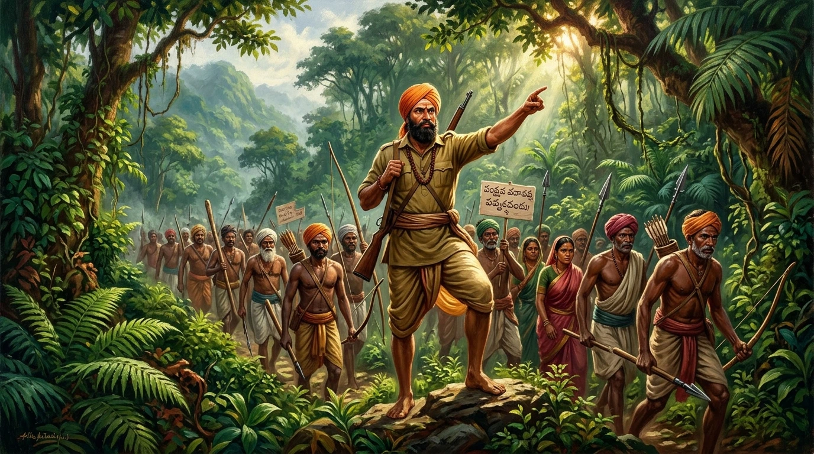
चित्र 4 (AI HD Artwork): 1922-1924 के दौरान आंध्र प्रदेश की घनी गुडेम पहाड़ियों में अल्लूरी सीताराम राजू के नेतृत्व में आदिवासियों का उग्र छापामार स्वतंत्रता संग्राम।
🔍 चित्र का विस्तृत विवरण & ऐतिहासिक संदर्भ:
• क्या दर्शाता है: ai alluri sitarama raju का ऐतिहासिक दृश्य और कलात्मक निरूपण।
• ऐतिहासिक महत्व: पाठ्यपुस्तक के इस अध्याय में विषय की गहराई और विजुअल समझ को बढ़ाने वाला महत्वपूर्ण प्रतीक।
🔍 चित्र का विस्तृत विवरण & ऐतिहासिक संदर्भ:
• क्या दर्शाता है: आंध्र प्रदेश की गुडेम पहाड़ियों के महान आदिवासी नायक **अल्लूरी सीताराम राजू (Alluri Sitarama Raju)** और उनका छापामार युद्ध (Guerilla Warfare)।
• ऐतिहासिक महत्व: सीताराम राजू ने गांधीजी के विचारों से प्रेरित होकर आदिवासियों को शराब छोड़ने और स्वदेशी अपनाने को प्रेरित किया, परंतु अंग्रेजों के खिलाफ हिंसा को आवश्यक माना।
1920 के दशक की शुरुआत में आंध्र प्रदेश की गुडेम पहाड़ियों (Gudem Hills) में एक उग्र छापामार आंदोलन (Guerrilla Movement) फैल गया। औपनिवेशिक सरकार ने बड़े-बड़े जंगलों में लोगों के दाखिले पर पाबंदी लगा दी थी।
अल्लूरी सीताराम राजू (Alluri Sitarama Raju): राजू का दावा था कि उनके पास विशेष खगोलीय शक्तियां हैं, वे लोगों को स्वस्थ कर सकते हैं और गोलियां भी उन्हें नहीं मार सकतीं। आदिवासियों का मानना था कि वह ईश्वर का अवतार है।
राजू महात्मा गांधी की महानता के कायल थे। उन्होंने लोगों को खादी पहनने और शराब छोड़ने के लिए प्रेरित किया। लेकिन साथ ही उन्होंने यह दावा भी किया कि भारत केवल बल प्रयोग (Force) के जरिए ही आजाद हो सकता है, अहिंसा से नहीं।
गुडेम विद्रोहियों ने पुलिस थानों पर हमले किए, ब्रिटिश अधिकारियों को मारने की कोशिश की और स्वराज प्राप्ति के लिए छापामार युद्ध चलाते रहे। 1924 में राजू को पकड़कर फांसी दे दी गई।
4. बागानों में स्वराज (Swaraj in the Plantations):
असम के चाय बागानों में काम करने वाले मजदूरों के लिए आजादी का मतलब यह था कि वे उन चारदीवारियों से जब चाहे आ-जा सकते हैं जिनमें उन्हें कैद करके रखा गया था।
📚 1859 का इंग्लैंड इमिग्रेशन एक्ट (Inland Emigration Act of 1859):
1859 के इंग्लैंड इमिग्रेशन एक्ट के तहत बागान मजदूरों को बिना अनुमति के चाय बागानों से बाहर जाने की छूट नहीं होती थी और यह अनुमति उन्हें विरले ही मिलती थी। जब उन्होंने असहयोग आंदोलन के बारे में सुना तो हजारों मजदूरों ने अपने अधिकारियों की अवहेलना की और बागान छोड़कर अपने घर की ओर चल पड़े। उन्हें विश्वास था कि अब 'गांधी राज' आ रहा है इसलिए हर एक को गाँव में जमीन मिल जाएगी। परंतु वे अपनी मंजिल पर नहीं पहुँच सके; रेलवे और स्टीमर की हड़ताल के कारण वे रास्ते में ही फंस गए और पुलिस ने उन्हें पकड़कर बेरहमी से पीटा।
भाग 3: सविनय अवज्ञा की ओर (Towards Civil Disobedience)
🚨 चौरी-चौरा कांड (फरवरी 1922) और आंदोलन की वापसी: फरवरी 1922 में गोरखपुर के चौरी-चौरा (Chauri Chaura) में बाजार से गुजर रहा एक शांतिपूर्ण जुलूस पुलिस के साथ हिंसक टकराव में बदल गया। उत्तेजित भीड़ ने एक पुलिस थाने में आग लगा दी जिसमें 22 पुलिसकर्मी जलकर मर गए। यह घटना सुनकर महात्मा गांधी ने असहयोग आंदोलन तुरंत वापस लेने का फैसला किया। उनका मानना था कि सत्याग्रहियों को अभी व्यापक अहिंसक जनांदोलन के लिए सही ढंग से प्रशिक्षित करने की आवश्यकता है।
1. स्वराज पार्टी का गठन (Formation of Swaraj Party):
कांग्रेस के कुछ नेता प्रांतीय परिषदों के चुनावों में भाग लेना चाहते थे ताकि कौंसिलों के भीतर रहकर ब्रिटिश नीतियों का विरोध किया जा सके और यह दिखाया जा सके कि ये परिषदें लोकतांत्रिक नहीं हैं।
संस्थापक:सी.आर. दास (Chittaranjan Das) और मोतीलाल नेहरू (Motilal Nehru) ने 1923 में कांग्रेस के भीतर ही 'स्वराज पार्टी' (Swaraj Party) का गठन किया।
युवा नेता: जवाहरलाल नेहरू और सुभाष चंद्र बोस जैसे युवा नेता अधिक उग्र जन-आंदोलन और पूर्ण स्वतंत्रता के लिए दबाव बना रहे थे।
2. 1920 के दशक के अंतिम वर्षों के 2 प्रभावकारी कारक:
विश्वव्यापी आर्थिक मंदी (Great Depression 1926-1930): 1926 से कृषि उत्पादों की कीमतें गिरने लगीं और 1930 के बाद पूरी तरह धराशायी हो गईं। कृषि उत्पादों की मांग घटी और निर्यात कम हो गया तो किसानों के लिए अपनी उपज बेचना और लगान चुकाना भारी हो गया।
साइमन कमीशन (Simon Commission 1928): ब्रिटेन की नई टॉरी सरकार ने भारत में संवैधानिक व्यवस्था की कार्यप्रणाली का अध्ययन करने के लिए सर जॉन साइमन (Sir John Simon) की अध्यक्षता में एक आयोग गठित किया।
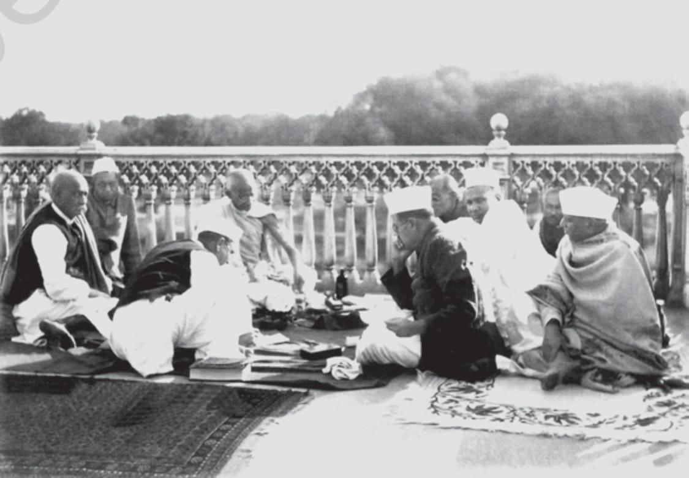
चित्र 2.4 (आधिकारिक NCERT इतिहास पाठ्यपुस्तक अध्याय 2): 1931 में इलाहाबाद में कांग्रेस के शीर्ष नेताओं (महात्मा गांधी, जवाहरलाल नेहरू, मौलाना आजाद) की ऐतिहासिक बैठक।
🔍 चित्र का विस्तृत विवरण & ऐतिहासिक संदर्भ:
• क्या दर्शाता है: ncert ch2 fig4 simoncommission का ऐतिहासिक दृश्य और कलात्मक निरूपण।
• ऐतिहासिक महत्व: पाठ्यपुस्तक के इस अध्याय में विषय की गहराई और विजुअल समझ को बढ़ाने वाला महत्वपूर्ण प्रतीक।
🔍 चित्र का विस्तृत विवरण & ऐतिहासिक संदर्भ:
• क्या दर्शाता है: 1928 में भारत पहुँचे साइमन कमीशन का 'साइमन वापस जाओ' (Go Back Simon) के काले झंडों और नारों के साथ विरोध प्रदर्शन करते भारतीय।
• ऐतिहासिक महत्व: सात सदस्यीय साइमन कमीशन में एक भी भारतीय सदस्य न होने के कारण पूरे देश में इसका कड़ा विरोध हुआ। इसी विरोध के दौरान लाला लाजपत राय पर लाठीचार्ज हुआ जिससे बाद में वे शहीद हो गए।
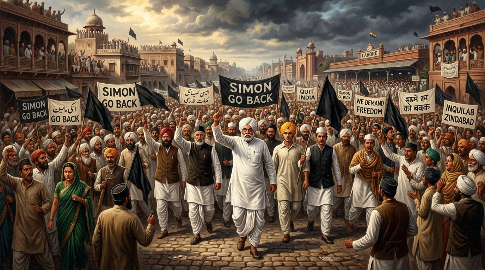
चित्र 5 (AI HD Artwork): 1928 में साइमन कमीशन के भारत आगमन पर 'साइमन वापस जाओ' (Simon Go Back) के काले झंडों के साथ राष्ट्रव्यापी प्रदर्शन।
🔍 चित्र का विस्तृत विवरण & ऐतिहासिक संदर्भ:
• क्या दर्शाता है: ai simon commission boycott का ऐतिहासिक दृश्य और कलात्मक निरूपण।
• ऐतिहासिक महत्व: पाठ्यपुस्तक के इस अध्याय में विषय की गहराई और विजुअल समझ को बढ़ाने वाला महत्वपूर्ण प्रतीक।
🔍 चित्र का विस्तृत विवरण & ऐतिहासिक संदर्भ:
• क्या दर्शाता है: लाला लाजपत राय के नेतृत्व में लाहौर में साइमन कमीशन का सत्याग्रही बहिष्कार और ब्रिटिश पुलिस का दमनकारी लाठीचार्ज।
• ऐतिहासिक महत्व: इस घटना ने भारतीय राष्ट्रीय आंदोलन को और अधिक उग्र और एकजुट बना दिया।
3. नमक यात्रा और सविनय अवज्ञा आंदोलन (Salt March & Civil Disobedience):
देश को एकजुट करने के लिए महात्मा गांधी को 'नमक' (Salt) एक शक्तिशाली प्रतीक दिखाई दिया। नमक का अमीर-गरीब सब इस्तेमाल करते थे; यह भोजन का एक अनिवार्य हिस्सा था। इसलिए नमक पर कर और उसके उत्पादन पर सरकारी एकाधिकार को गांधीजी ने ब्रिटिश शासन का सबसे दमनकारी चेहरा बताया।
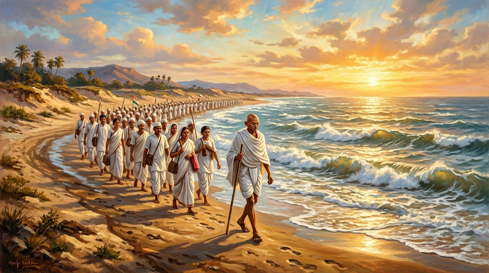
चित्र 6 (AI HD Artwork): 12 मार्च - 6 अप्रैल 1930 की ऐतिहासिक दांडी यात्रा - महात्मा गांधी 78 स्वयंसेवकों के साथ गुजरात समुद्र तट पर नमक कानून तोड़ते हुए।
🔍 चित्र का विस्तृत विवरण & ऐतिहासिक संदर्भ:
• क्या दर्शाता है: ai dandi march gandhi का ऐतिहासिक दृश्य और कलात्मक निरूपण।
• ऐतिहासिक महत्व: पाठ्यपुस्तक के इस अध्याय में विषय की गहराई और विजुअल समझ को बढ़ाने वाला महत्वपूर्ण प्रतीक।
🔍 चित्र का विस्तृत विवरण & ऐतिहासिक संदर्भ:
• क्या दर्शाता है: 12 मार्च 1930 को महात्मा गांधी द्वारा 78 विश्वस्त स्वयंसेवकों के साथ साबरमती आश्रम से दांडी (240 मील) तक ऐतिहासिक **दांडी यात्रा (Dandi March)**।
• ऐतिहासिक महत्व: 6 अप्रैल 1930 को गांधीजी ने दांडी पहुँचकर समुद्र के पानी से नमक बनाकर ब्रिटिश नमक कानून तोड़ा और **सविनय अवज्ञा आंदोलन (Civil Disobedience Movement)** का शंखनाद किया।
🧂 दांडी यात्रा (Dandi March - 12 मार्च से 6 अप्रैल 1930):
• गांधीजी का पत्र (31 जनवरी 1930): वायसराय इरविन को पत्र भेजकर 11 माँगें रखीं। सबसे महत्वपूर्ण माँग नमक कर समाप्त करने की थी। अल्टीमेटम दिया गया कि 11 मार्च तक माँगें न मानने पर सविनय अवज्ञा शुरू होगा।
• यात्रा का प्रारंभ: 12 मार्च 1930 को गांधीजी ने अपने 78 विश्वस्त स्वयंसेवकों (78 Volunteers) के साथ साबरमती आश्रम से दांडी (गुजरात तटीय गाँव) की यात्रा शुरू की।
• दूरी व समय: साबरमती से दांडी तक 240 मील की दूरी थी। सत्याग्रहियों ने 24 दिन तक हर रोज 10 मील का सफर तय किया।
• नमक कानून का उल्लंघन:6 अप्रैल 1930 को सुबह दांडी पहुँचकर उन्होंने समुद्र का पानी उबालकर नमक बनाना शुरू किया और नमक कानून का उल्लंघन किया। इसके साथ ही सविनय अवज्ञा आंदोलन (Civil Disobedience Movement) का औपचारिक शुभारंभ हुआ।
असहयोग और सविनय अवज्ञा आंदोलन में मुख्य अंतर:
तुलना का आधार
असहयोग आंदोलन (1921-1922)
सविनय अवज्ञा आंदोलन (1930-1934)
मूल उद्देश्य
ब्रिटिश सरकार के साथ सहयोग न करना (Non-cooperation)।
सहयोग न करने के साथ-साथ औपनिवेशिक कानूनों को तोड़ना (Breaking laws)।
नियमों का उल्लंघन
कानून नहीं तोड़े गए; केवल बहिष्कार (स्कूल, कॉलेज, अदालत, सामान) किया गया।
नमक कानून, वन कानून (Forest laws) और कर-अदायगी न करने जैसे स्पष्ट कानून तोड़े गए।
हिंसा/घटना
चौरी-चौरा हिंसक घटना के बाद वापस लिया गया।
सरकार द्वारा भारी दमन और गिरफ्तारियों के बाद भी कई चरणों में चला।
मुस्लिम भागीदारी
खिलाफत मुद्दे के कारण बहुत व्यापक और मजबूत हिंदू-मुस्लिम एकता थी।
मुस्लिम संगठनों का अलगाव होने के कारण मुस्लिम भागीदारी काफी कम रही।
📚 गांधी-इरविन समझौता (5 मार्च 1931) और दूसरा गोलमेज सम्मेलन:
आंदोलन के दौरान लगभग 1,00,000 लोगों को गिरफ्तार किया गया। पेशावर में खान अब्दुल गफ्फार खान (सीमांत गांधी) की गिरफ्तारी पर जनता ने प्रदर्शन किया। 5 मार्च 1931 को गांधीजी और वायसराय इरविन के बीच एक समझौता (Gandhi-Irwin Pact) हुआ।
• गांधीजी ने द्वितीय गोलमेज सम्मेलन (Second Round Table Conference) में भाग लेने के लिए लंदन जाना स्वीकार किया। बदले में सरकार राजनीतिक कैदियों को रिहा करने पर सहमत हो गई।
• लंदन से निराशा: दिसंबर 1931 में गांधीजी लंदन गए लेकिन वार्ता टूट गई और उन्हें खाली हाथ लौटना पड़ा। भारत वापस आने पर उन्होंने देखा कि गफ्फार खान और जवाहरलाल नेहरू दोनों जेल में थे और कांग्रेस को गैरकानूनी घोषित कर दिया गया था। 1932 में आंदोलन दोबारा शुरू हुआ लेकिन 1934 तक यह अपनी गति खो चुका था।
भाग 4: लोगों ने आंदोलन को कैसे लिया (How Participants saw the Movement)
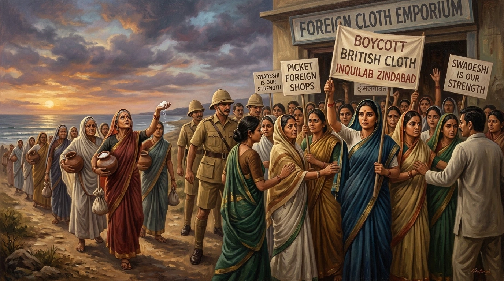
चित्र 10 (AI HD Artwork): 1930 के सविनय अवज्ञा आंदोलन में भारतीय नारियों द्वारा शराब व विदेशी कपड़ों की दुकानों पर पिकेटिंग तथा दांडी यात्रा में अभूतपूर्व भूमिका।
🔍 चित्र का विस्तृत विवरण & ऐतिहासिक संदर्भ:
• क्या दर्शाता है: ai women national movement का ऐतिहासिक दृश्य और कलात्मक निरूपण।
• ऐतिहासिक महत्व: पाठ्यपुस्तक के इस अध्याय में विषय की गहराई और विजुअल समझ को बढ़ाने वाला महत्वपूर्ण प्रतीक।
🔍 चित्र का विस्तृत विवरण & ऐतिहासिक संदर्भ:
• क्या दर्शाता है: सविनय अवज्ञा आंदोलन में भारतीय महिलाओं की विशाल और सक्रिय भागीदारी - शराब व विदेशी कपड़ों की दुकानों पर पिकेटिंग करना और जुलूस निकालना।
• ऐतिहासिक महत्व: पहली बार भारतीय महिलाएं अपने घरों से बाहर निकलकर राष्ट्रीय स्वतंत्रता संग्राम की अग्रिम पंक्ति में शामिल हुईं।
विभिन्न सामाजिक समूहों की भागीदारी और उनके दृष्टिकोण:
1. सम्पन्न किसान (Rich Peasants - गुजरात के पाटीदार व यूपी के जाट):
व्यावसायिक फसलों की खेती करने के कारण मंदी और गिरती कीमतों से वे तबाह हो गए। लगान चुकाना असंभव हो गया और सरकार लगान कम करने को तैयार नहीं थी। उनके लिए स्वराज की लड़ाई भारी लगान के खिलाफ लड़ाई थी। लेकिन 1931 में बिना लगान घटे आंदोलन वापस लिए जाने से वे निराश हुए, इसलिए 1932 में जब आंदोलन दोबारा शुरू हुआ तो उन्होंने हिस्सा लेने से इनकार कर दिया।
2. निर्धन किसान (Poor Peasants):
वे केवल लगान में कमी नहीं चाहते थे; उनमें से बहुत से किसान जमींदारों से जमीन पट्टे पर लेकर खेती कर रहे थे। मंदी के कारण किराया चुकाना मुश्किल था। वे चाहते थे कि बकाया किराया माफ कर दिया जाए ('नो रेंट' अभियान)। परंतु कांग्रेस अमीर जमींदारों को नाराज नहीं करना चाहती थी, इसलिए उसने 'नो रेंट' अभियानों को ज्यादा समर्थन नहीं दिया।
3. व्यवसायी और उद्योगपति (Business Classes):
प्रथम विश्व युद्ध के दौरान भारतीय उद्योगपतियों ने भारी मुनाफा कमाया था। वे ऐसी औपनिवेशिक नीतियों का विरोध कर रहे थे जो उनके व्यवसाय में रुकावट डालती थीं। वे विदेशी वस्तुओं के आयात से सुरक्षा और रुपया-स्टर्लिंग विनिमय अनुपात में बदलाव चाहते थे।
• उन्होंने 1927 में भारतीय वाणिज्य एवं उद्योग महासंघ (FICCI - Federation of Indian Chambers of Commerce and Industry) का गठन किया।
• पुरुषोत्तमदास ठाकुरदास और जी.डी. बिड़ला जैसे उद्योगपतियों के नेतृत्व में उद्योगपतियों ने औपनिवेशिक नियंत्रण पर हमला किया, सविनय अवज्ञा को वित्तीय सहायता दी और आयातित सामान खरीदने से इनकार किया।
4. औद्योगिक श्रमिक वर्ग (Industrial Workers):
नागपुर के अलावा अन्य किसी क्षेत्र में औद्योगिक श्रमिकों ने सविनय अवज्ञा में बड़े पैमाने पर हिस्सा नहीं लिया। जैसे-जैसे उद्योगपति कांग्रेस के करीब आ रहे थे, मजदूर कांग्रेस से दूर होने लगे। फिर भी कुछ मजदूरों ने गांधीवादी टोपी पहनकर कम मजदूरी और खराब कार्य-स्थितियों के खिलाफ हड़ताल की (उदा: 1930 में रेलवे कर्मचारियों व 1932 में गोदी कर्मचारियों की हड़ताल)।
5. महिलाओं की अभूतपूर्व भूमिका (Role of Women):
सविनय अवज्ञा आंदोलन में महिलाओं ने बड़े पैमाने पर हिस्सा लिया। दांडी यात्रा के दौरान हजारों महिलाएं गांधीजी की बात सुनने घर से बाहर निकलती थीं। उन्होंने जुलूसों में हिस्सा लिया, नमक बनाया, शराब और विदेशी कपड़ों की दुकानों की पिकेटिंग की और कई महिलाएं जेल भी गईं। लेकिन कांग्रेस लंबे समय तक महिलाओं को किसी अधिकार पद पर रखने से हिचकिचाती रही; गांधीजी का मानना था कि घर चलाना और अच्छी मां-पत्नी बनना ही महिलाओं का मुख्य कर्तव्य है।
भाग 5: सविनय अवज्ञा की सीमाएं (Limits of Civil Disobedience)
सभी सामाजिक समूह 'स्वराज' की अमूर्त अवधारणा से प्रभावित नहीं थे। ऐसा ही एक समूह देश के 'अछूत' (Untouchables) का था, जो 1930 के दशक के आसपास स्वयं को 'दलित' (Dalit - उत्पीड़ित) कहने लगे थे।
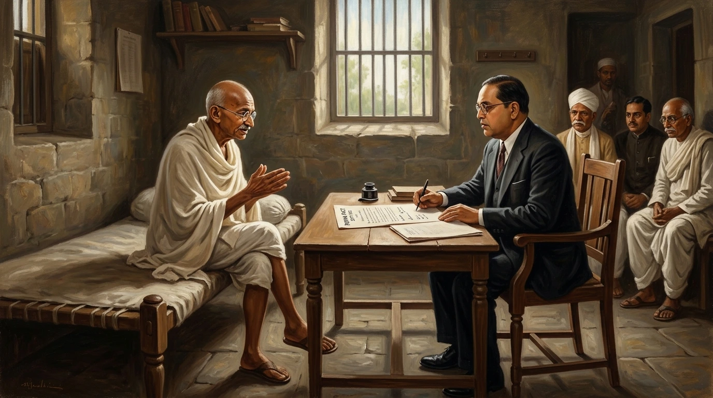
चित्र 7 (AI HD Artwork): सितंबर 1932 में यरवदा (पुणे) में महात्मा गांधी तथा डॉ. बी.आर. आंबेडकर के मध्य ऐतिहासिक 'पूना पैक्ट' (Poona Pact) समझौता।
🔍 चित्र का विस्तृत विवरण & ऐतिहासिक संदर्भ:
• क्या दर्शाता है: ai poona pact ambedkar का ऐतिहासिक दृश्य और कलात्मक निरूपण।
• ऐतिहासिक महत्व: पाठ्यपुस्तक के इस अध्याय में विषय की गहराई और विजुअल समझ को बढ़ाने वाला महत्वपूर्ण प्रतीक।
🔍 चित्र का विस्तृत विवरण & ऐतिहासिक संदर्भ:
• क्या दर्शाता है: सितम्बर 1932 में महात्मा गांधी और डॉ. बी.आर. अंबेडकर के बीच ऐतिहासिक **पूना पैक्ट (Poona Pact)** पर हस्ताक्षर का दृश्य।
• ऐतिहासिक महत्व: दलितों (दमित वर्गों) के लिए पृथक निर्वाचिका के स्थान पर प्रांतीय व केंद्रीय परिषदों में आरक्षित सीटों की व्यवस्था की गई, जिससे राष्ट्रीय आंदोलन की अखंडता बनी रही।
1. दलित वर्ग और डॉ. बी.आर. आंबेडकर:
कांग्रेस लंबे समय तक दलितों की उपेक्षा करती रही क्योंकि वह 'सनातनी' (उच्च जातीय हिंदू संभ्रांतों) को नाराज करने से डरती थी। लेकिन महात्मा गांधी का ऐलान था कि अस्पृश्यता (Untouchability) को खत्म किए बिना 100 साल तक भी स्वराज नहीं मिल सकता। उन्होंने अछूतों को 'हरिजन' (Harijan - ईश्वर की संतान) कहा, मंदिरों व सार्वजनिक कुओं में प्रवेश के लिए सत्याग्रह किया।
दमित वर्ग एसोसिएशन 1930 (Depressed Classes Association):डॉ. बी.आर. आंबेडकर (Dr. B.R. Ambedkar) ने 1930 में दलितों को 'दमित वर्ग एसोसिएशन' में संगठित किया। उन्होंने दूसरे गोलमेज सम्मेलन में दलितों के लिए पृथक निर्वाचन क्षेत्रों (Separate Electoral College) की मांग की।
📜 पूना पैक्ट (Poona Pact - सितंबर 1932):
जब ब्रिटिश सरकार ने आंबेडकर की पृथक निर्वाचिका की मांग मान ली तो महात्मा गांधी आमरण अनशन (Fast unto death) पर बैठ गए। उनका मानना था कि पृथक निर्वाचन क्षेत्रों से समाज में दलितों का एकीकरण धीमा पड़ जाएगा। अंततः आंबेडकर ने गांधीजी की राय मान ली और सितंबर 1932 में 'पूना पैक्ट' (Poona Pact) पर हस्ताक्षर हुए।
इसके तहत दलित वर्गों (अनुसूचित जातियों) को प्रांतीय और केंद्रीय विधान परिषदों में आरक्षित सीटें (Reserved Seats) दी गईं, लेकिन उनका मतदान सामान्य निर्वाचन क्षेत्रों द्वारा ही होना था।
2. मुस्लिम संगठनों का रुख और अलगाव:
असहयोग-खिलाफत आंदोलन के शांत पड़ने के बाद मुस्लिम समुदाय का एक बड़ा वर्ग कांग्रेस से कटा हुआ महसूस करने लगा। 1920 के दशक के मध्य से कांग्रेस हिंदू महासभा जैसे हिंदू धार्मिक राष्ट्रवादी संगठनों के करीब दिखाई देने लगी।
मुस्लिम लीग (Muslim League) और कांग्रेस के बीच गठबंधन के प्रयास हुए। मुस्लिम लीग के नेता मोहम्मद अली जिन्ना (Muhammad Ali Jinnah) पृथक निर्वाचिका की मांग छोड़ने को तैयार थे यदि मुसलमानों को केंद्रीय सभा में आरक्षित सीटें मिलें और मुस्लिम बहुल प्रांतों (पंजाब, बंगाल) में आबादी के अनुपात में प्रतिनिधित्व मिले।
लेकिन 1928 में सर्वदलीय सम्मेलन (All Parties Conference) में ऑल इंडिया हिंदू महासभा के एम.आर. जयकर (M.R. Jayakar) ने इस समझौते का कड़ा विरोध किया, जिससे समाधान की उम्मीदें समाप्त हो गईं। सविनय अवज्ञा शुरू होने पर मुसलमानों में संदेह और अविश्वास का माहौल था।
भाग 6: सामूहिक अपनत्व की भावना (The Sense of Collective Belonging)
राष्ट्रवाद की भावना तब पनपती है जब लोग यह महसूस करने लगते हैं कि वे एक ही राष्ट्र के अंग हैं। संयुक्त संघर्षों के अनुभव के अलावा कई सांस्कृतिक प्रक्रियाओं (इतिहास, साहित्य, लोककथाएं, चित्र व प्रतीक) ने राष्ट्रवाद को आकार दिया।
1. भारत माता का रूपक (Allegory of Bharat Mata):
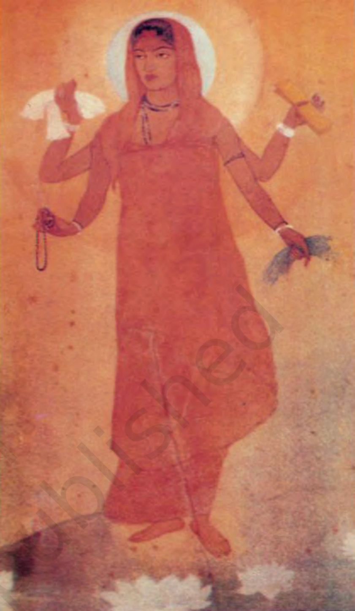
चित्र 2.5 (आधिकारिक NCERT इतिहास पाठ्यपुस्तक अध्याय 2): 1905 में अवनिंद्रनाथ टैगोर द्वारा चित्रित 'भारत माता' (संन्यासिनी रूप) एवं बाल गंगाधर तिलक का ऐतिहासिक पोस्टर।
🔍 चित्र का विस्तृत विवरण & ऐतिहासिक संदर्भ:
• क्या दर्शाता है: ncert ch2 fig5 bharatmata का ऐतिहासिक दृश्य और कलात्मक निरूपण।
• ऐतिहासिक महत्व: पाठ्यपुस्तक के इस अध्याय में विषय की गहराई और विजुअल समझ को बढ़ाने वाला महत्वपूर्ण प्रतीक।
🔍 चित्र का विस्तृत विवरण & ऐतिहासिक संदर्भ:
• क्या दर्शाता है: अबनिंद्रनाथ टैगोर (Abanindranath Tagore) द्वारा 1905 में चित्रित 'भारत माता' (Bharat Mata) का पहला ऐतिहासिक चित्र। इसमें उन्हें एक संन्यासिनी के रूप में दिखाया गया है जो हाथ में शिक्षा, वस्त्र, अन्न और माला लिए हुए हैं।
• ऐतिहासिक महत्व: भारत माता की इस शांत, गंभीर व दिव्य छवि ने देशवासियों में अपार भक्ति और राष्ट्रीय एकता का संचार किया।
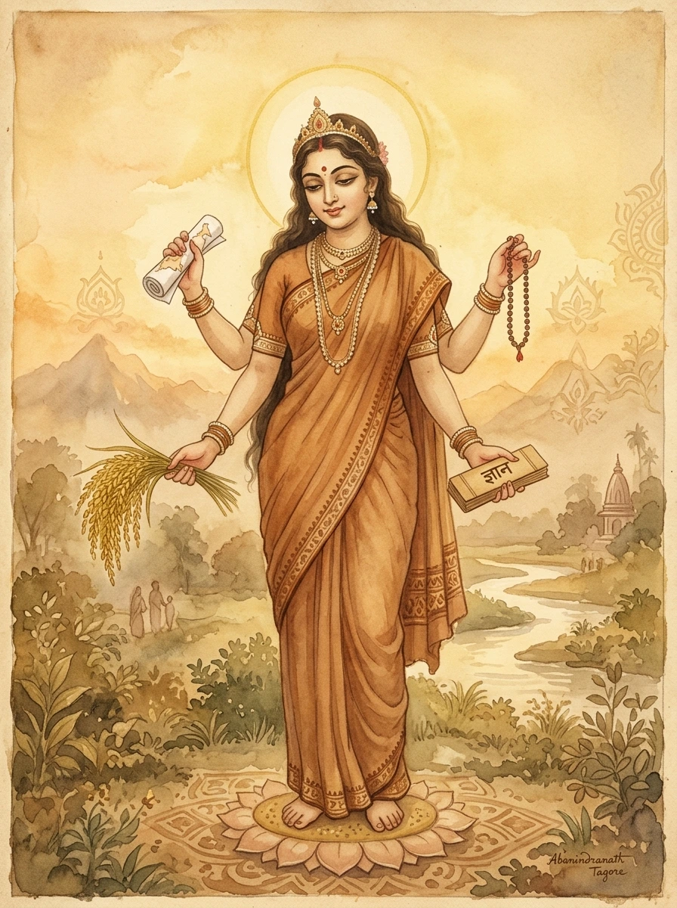
चित्र 8 (AI HD Artwork): भारत माता का दिव्य, शांत व आध्यात्मिक स्वरूप (हाथों में अन्न, कपड़ा, शिक्षा का ग्रंथ तथा ज्ञान माला के साथ)।
🔍 चित्र का विस्तृत विवरण & ऐतिहासिक संदर्भ:
• क्या दर्शाता है: ai bharat mata divine का ऐतिहासिक दृश्य और कलात्मक निरूपण।
• ऐतिहासिक महत्व: पाठ्यपुस्तक के इस अध्याय में विषय की गहराई और विजुअल समझ को बढ़ाने वाला महत्वपूर्ण प्रतीक।
🔍 चित्र का विस्तृत विवरण & ऐतिहासिक संदर्भ:
• क्या दर्शाता है: भारत माता का दिव्य राष्ट्रीय रूपक - हाथ में तिरंगा और शेरों की सवारी, राष्ट्रीय स्वाभिमान और स्वतंत्रता का प्रतीक।
• ऐतिहासिक महत्व: 20वीं सदी में भारत माता की छवियां राष्ट्रीय आंदोलन का मुख्य विजुअल प्रतीक बन गईं।
राष्ट्र की पहचान को अक्सर किसी मूर्ति या चित्र में ढाला जाता है। 19वीं सदी में भारत माता की पहली छवि बंकिम चंद्र चट्टोपाध्याय (Bankim Chandra Chattopadhyay) ने बनाई।
1870 के दशक में उन्होंने 'वंदे मातरम' (Vande Mataram) गीत लिखा, जिसे बाद में उनके उपन्यास 'आनंदमठ' (Anandamath) में शामिल किया गया। यह गीत स्वदेशी आंदोलन में व्यापक रूप से गाया गया।
स्वदेशी आंदोलन की प्रेरणा से अवनिंद्रनाथ टैगोर (Abanindranath Tagore) ने 1905 में भारत माता का प्रसिद्ध चित्र बनाया। इस चित्र में भारत माता को एक संन्यासिनी के रूप में दिखाया गया है; वह शांत, गंभीर, दैवीय और आध्यात्मिक गुणों से युक्त हैं। उनके हाथों में अन्न, कपड़ा, शिक्षा और माला दिखाई गई है।
2. भारतीय लोककथाएं और राष्ट्रवाद (Folklore & Nationalism):
19वीं सदी के अंत में राष्ट्रवादियों ने कवियों व विचारकों द्वारा गाए जाने वाले लोकगीतों व कथाओं को दर्ज करना शुरू किया। उनका मानना था कि ये गाथाएं हमारी उस परंपरागत संस्कृति की सही तस्वीर पेश करती हैं जो बाहरी ताकतों के प्रभाव से भ्रष्ट हो चुकी थी।
बंगाल में रवींद्रनाथ टैगोर (Rabindranath Tagore) स्वयं लोकगीत, बालगीत और मिथकों को इकट्ठा करने निकल पड़े।
मद्रास में नटेसा शास्त्री (Natesa Sastri) ने 'द फॉकलोर ऑफ सदर्न इंडिया' (The Folklore of Southern India) नाम से तमिल लोककथाओं का चार खंडों में एक विशाल संग्रह प्रकाशित किया। उनका मानना था कि लोकसाहित्य राष्ट्रीय साहित्य होता है।
3. राष्ट्रीय ध्वज का विकास (Evolution of National Flag):
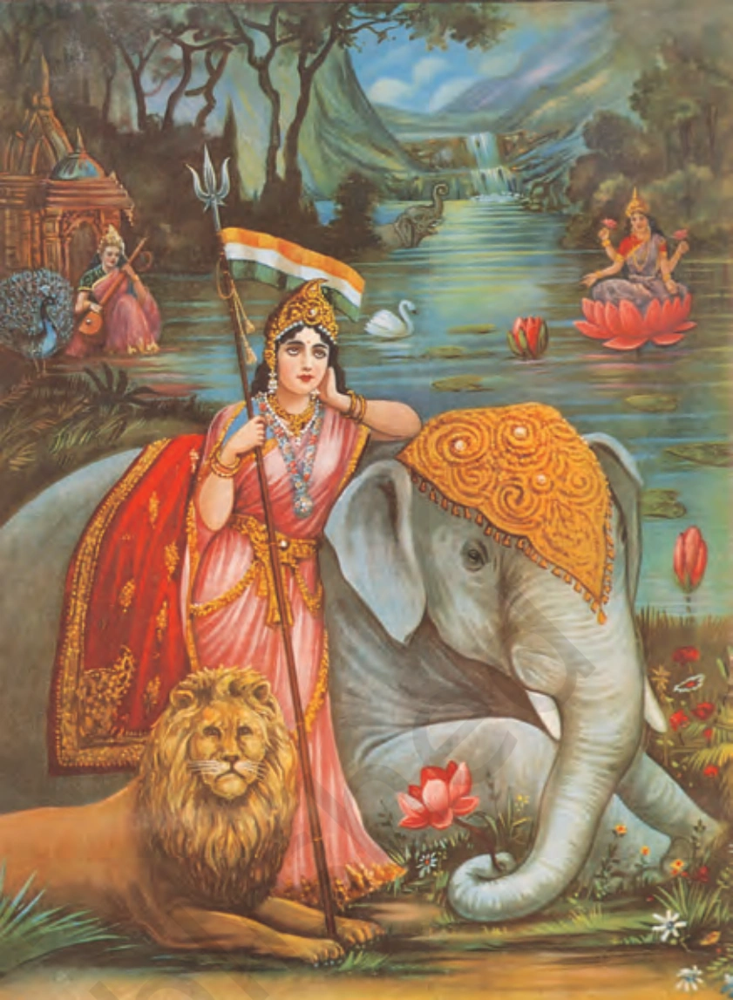
चित्र 2.6 (आधिकारिक NCERT इतिहास पाठ्यपुस्तक अध्याय 2): भारत माता का शक्ति एवं सत्ता का प्रतीक रूप (हाथों में त्रिशूल, राष्ट्रीय ध्वज, सिंह तथा हाथी के साथ)।
🔍 चित्र का विस्तृत विवरण & ऐतिहासिक संदर्भ:
• क्या दर्शाता है: ncert ch2 fig6 swarajflag का ऐतिहासिक दृश्य और कलात्मक निरूपण।
• ऐतिहासिक महत्व: पाठ्यपुस्तक के इस अध्याय में विषय की गहराई और विजुअल समझ को बढ़ाने वाला महत्वपूर्ण प्रतीक।
🔍 चित्र का विस्तृत विवरण & ऐतिहासिक संदर्भ:
• क्या दर्शाता है: 1921 में महात्मा गांधी द्वारा डिजाइन किया गया स्वदेशी **'स्वराज्य ध्वज' (Swaraj Flag)** - लाल, हरा और सफेद तिरंगा, जिसके केंद्र में आत्मनिर्भरता का प्रतीक चरखा अंकित है।
• ऐतिहासिक महत्व: यह झंडा जुलूसों और आंदोलनों में फहराया जाने लगा जो ब्रिटिश शासन के खिलाफ सामूहिक प्रतिरोध का प्रतीक था।
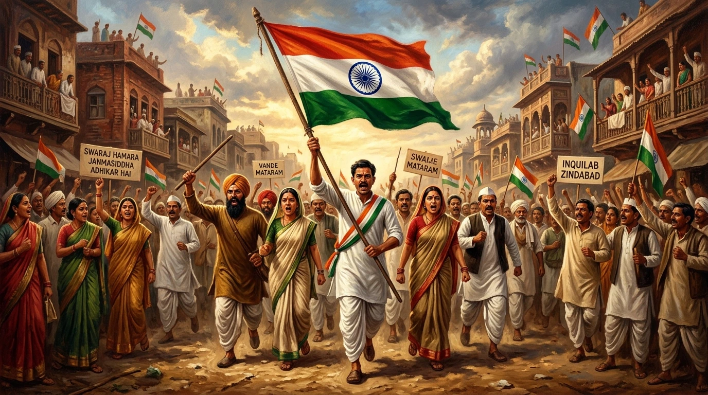
चित्र 9 (AI HD Artwork): 1921 का गांधीवादी 'स्वराज ध्वज' (चरखा युक्त तिरंगा) थामे देशभक्त सत्याग्रही।
🔍 चित्र का विस्तृत विवरण & ऐतिहासिक संदर्भ:
• क्या दर्शाता है: ai swaraj flag tricolour का ऐतिहासिक दृश्य और कलात्मक निरूपण।
• ऐतिहासिक महत्व: पाठ्यपुस्तक के इस अध्याय में विषय की गहराई और विजुअल समझ को बढ़ाने वाला महत्वपूर्ण प्रतीक।
🔍 चित्र का विस्तृत विवरण & ऐतिहासिक संदर्भ:
• क्या दर्शाता है: भारतीय स्वतंत्रता संग्राम में स्वदेशी तिरंगे ध्वज के साथ मार्च करते देशभक्त और सत्याग्रही।
• ऐतिहासिक महत्व: झंडे ने विभिन्न धर्मों और क्षेत्रों के लोगों को एक ही राष्ट्रीय पहचान के नीचे एकजुट किया।
ध्वज का प्रकार
निर्मित काल / आंदोलन
रंग व मुख्य प्रतीक / विशेषताएं
स्वदेशी तिरंगा झंडा
1905 का स्वदेशी आंदोलन (बंगाल)
तीन रंग (हरा, पीला, लाल); इसमें ब्रिटिश भारत के 8 प्रांतों का प्रतिनिधित्व करते 8 कमल के फूल और हिंदू-मुस्लिम एकता का प्रतीक अर्धचंद्र (Crescent moon) था।
गांधीवादी 'स्वराज ध्वज'
1921 में महात्मा गांधी द्वारा तैयार
तीन रंग (सफेद, हरा, लाल); इसके केंद्र में स्वावलंबन (Self-help) का प्रतीक चरखा (Spinning wheel) था। जुलूसों में झंडा थाम कर चलना शासन के प्रति अवज्ञा का प्रतीक था।
4. इतिहास की पुनर्व्याख्या (Reinterpretation of History):
राष्ट्रवाद की भावना पैदा करने का एक और साधन इतिहास की पुनर्व्याख्या था। अंग्रेजों की नजर में भारतीय पिछड़े और आदिम लोग थे जो अपना शासन खुद नहीं संभाल सकते थे। इसके जवाब में भारतीयों ने अपनी महान उपलब्धियों की खोज में अतीत की ओर देखना शुरू किया।
उन्होंने उस प्राचीन काल के बारे में लिखना शुरू किया जब कला, वास्तुकला, विज्ञान, गणित, धर्म, संस्कृति, कानून और व्यापार का भारत में स्वर्णिम विकास हुआ था। उनका तर्क था कि इस स्वर्णिम युग के पतन के बाद भारत को गुलाम बना लिया गया।
भाग 7: संपूर्ण अध्याय समयरेखा (Master Timeline 1915-1947)
वर्ष / तिथि
ऐतिहासिक घटना / राष्ट्रीय मील का पत्थर
जनवरी 1915
महात्मा गांधी दक्षिण अफ्रीका से भारत लौटे।
1917
चंपारण सत्याग्रह (बिहार) और खेड़ा सत्याग्रह (गुजरात)।
1918
अहमदाबाद सूती कपड़ा मिल मजदूर सत्याग्रह।
फरवरी 1919
रोलेट एक्ट (Rowlatt Act) पारित किया गया।
6 अप्रैल 1919
रोलेट एक्ट के खिलाफ राष्ट्रव्यापी हड़ताल (रोलेट सत्याग्रह)।
13 अप्रैल 1919
जलियांवाला बाग हत्याकांड (अमृतसर) - जनरल डायर।
मार्च 1919
बंबई में खिलाफत समिति का गठन (अली बंधु)।
सितंबर 1920
कांग्रेस का कलकत्ता अधिवेशन (असहयोग का प्रस्ताव)।
दिसंबर 1920
कांग्रेस का नागपुर अधिवेशन (असहयोग कार्यक्रम स्वीकृत)।
जनवरी 1921
असहयोग-खिलाफत आंदोलन का औपचारिक प्रारंभ।
फरवरी 1922
चौरी-चौरा कांड (गोरखपुर); गांधीजी द्वारा असहयोग आंदोलन वापस।
1923
सी.आर. दास और मोतीलाल नेहरू द्वारा 'स्वराज पार्टी' की स्थापना।
1924
अल्लूरी सीताराम राजू की गिरफ्तारी और फांसी (गुडेम पहाड़ी विद्रोह)।
1927
FICCI की स्थापना; साइमन कमीशन का गठन।
1928
साइमन कमीशन का भारत आगमन ('साइमन वापस जाओ' विरोध)।
दिसंबर 1929
लाहौर अधिवेशन (अध्यक्ष: जवाहरलाल नेहरू) - 'पूर्ण स्वराज' का संकल्प।
26 जनवरी 1930
देशभर में पहला स्वतंत्रता दिवस मनाने का आह्वान।
12 मार्च - 6 अप्रैल 1930
गांधीजी की ऐतिहासिक दांडी यात्रा और सविनय अवज्ञा का प्रारंभ।
1930
डॉ. बी.आर. आंबेडकर द्वारा 'दमित वर्ग एसोसिएशन' का गठन।
5 मार्च 1931
गांधी-इरविन समझौता (Gandhi-Irwin Pact)।
दिसंबर 1931
गांधीजी का द्वितीय गोलमेज सम्मेलन (लंदन) जाना; वार्ता असफल।
सितंबर 1932
पूना पैक्ट (Poona Pact) - गांधीजी और डॉ. आंबेडकर के बीच समझौता।
1934
सविनय अवज्ञा आंदोलन पूरी तरह शांत पड़ा।
भाग 8: बोर्ड परीक्षा हेतु मानचित्र अभ्यास (Map Work)
🗺️ NCERT बोर्ड परीक्षा के लिए अति-महत्वपूर्ण मानचित्र स्थल:
1. भारतीय राष्ट्रीय कांग्रेस के अधिवेशन (Session Centers):
• कलकत्ता (सितंबर 1920): पश्चिम बंगाल
• नागपुर (दिसंबर 1920): महाराष्ट्र
• मद्रास (1927): तमिलनाडु (चेन्नई)
• लाहौर (दिसंबर 1929): पंजाब (पाकिस्तान)
2. राष्ट्रीय आंदोलन के प्रमुख केंद्र (Important Centers of National Movement):
• चंपारण (बिहार): नील की खेती करने वाले किसानों का आंदोलन
• खेड़ा (गुजरात): किसान सत्याग्रह (लगान माफी)
• अहमदाबाद (गुजरात): सूती कपड़ा मिल मजदूर सत्याग्रह
• अमृतसर (पंजाब): जलियांवाला बाग हत्याकांड (13 अप्रैल 1919)
• चौरी-चौरा (गोरखपुर, यूपी): असहयोग आंदोलन की समाप्ति का स्थान
• दांडी (गुजरात): सविनय अवज्ञा आंदोलन / नमक सत्याग्रह की शुरुआत
भाग 9: हमने क्या सीखा? (पाठ का सार - Key Takeaways & Summary)
📌 अध्याय 2 का संपूर्ण सार एवं मुख्य बिंदु (10 महत्वपूर्ण निष्कर्ष):
1. प्रथम विश्व युद्ध और आर्थिक संकट: प्रथम विश्व युद्ध ने भारत में करों में वृद्धि, सीमा शुल्क और जबरन भर्ती से भारी आर्थिक संकट पैदा किया। 1919 में तुर्की के खलीफा के समर्थन में 'खिलाफत समिति' बनी।
2. सत्याग्रह का विचार और गांधीजी के प्रयोग: 1915 में दक्षिण अफ्रीका से लौटने के बाद गांधीजी ने सत्य और अहिंसा पर आधारित सत्याग्रह दिया: चंपारण (1817-नील किसान), खेड़ा (1917-लगान माफी), और अहमदाबाद (1918-सूती मिल मजदूर)।
3. रौलट एक्ट (1919) और जलियांवाला बाग हत्याकांड: बिना मुकदमे 2 साल तक जेल में बंद रखने वाले रौलट एक्ट के विरोध में आंदोलन। 13 अप्रैल 1919 को अमृतसर में जनरल डायर ने निहत्थी भीड़ पर जलियांवाला बाग में गोलियां चलवाईं।
4. असहयोग आंदोलन (1920-1922): नागपुर कांग्रेस अधिवेशन (दिसंबर 1920) में स्वीकृति। सरकारी पदवियां लौटाना, स्कूलों, वकीलों द्वारा अदालतों और विदेशी कपड़ों का बहिष्कार तथा खादी का प्रसार।
5. आंदोलन की विभिन्न सामाजिक धाराएं: शहरों में मध्यम वर्ग का बहिष्कार, अवध में बाबा रामचंद्र के नेतृत्व में किसान आंदोलन, आंध्र प्रदेश की गुडेम पहाड़ियों में अल्लूरी सीताराम राजू का छापामार संघर्ष, और असम के चाय बागान मजदूरों द्वारा स्वराज्य की मांग।
6. चौरी-चौरा कांड और स्वराज्य पार्टी: फरवरी 1922 में चौरी-चौरा (गोरखपुर) में हिंसक घटना के बाद गांधीजी ने असहयोग आंदोलन वापस लिया। सी.आर. दास और मोतीलाल नेहरू ने 'स्वराज्य पार्टी' बनाई।
7. साइमन कमीशन (1928) व पूर्ण स्वराज्य (1929): साइमन कमीशन का 'साइमन वापस जाओ' नारों से विरोध। दिसंबर 1929 के लाहौर अधिवेशन (अध्यक्ष: जवाहरलाल नेहरू) में 'पूर्ण स्वराज्य' का प्रस्ताव पारित हुआ।
8. सविनय अवज्ञा आंदोलन और दांडी यात्रा (1930): 12 मार्च 1930 को सबरमती से दांडी (240 मील) यात्रा। 6 अप्रैल 1930 को नमक कानून तोड़कर आंदोलन शुरू हुआ।
9. गांधी-इरविन समझौता (1931) व आंदोलन की सीमाएं: 5 मार्च 1931 को समझौता। दलितों का अलगाव (1932 का **पूना पैक्ट** - गांधीजी व अंबेडकर के बीच) और मुस्लिम संगठनों की दूरी सविनय अवज्ञा की प्रमुख सीमाएं रहीं।
10. सामूहिक अपनत्व की भावना: भारत माता की छवि (अबनिंद्रनाथ टैगोर द्वारा), बंकिमचंद्र का 'वंदे मातरम', लोककथाएं (नटेसा शास्त्री), स्वदेशी तिरंगा ध्वज (1921), और इतिहास की पुनर्व्याख्या से राष्ट्रीय चेतना जागी।